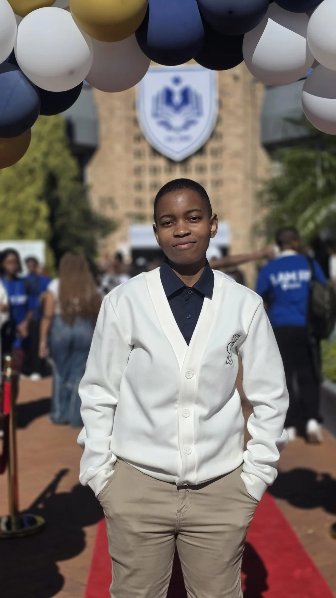

ICT Lecturer · Full Stack Developer · Computing Researcher
Andiswa
Sibusisiwe
Phewa
I teach computing, develop software, work with data and conduct research across technology, learning and digital systems.

Teaching that connects theory, practice and possibility.
My work brings together computing education, practical software development, student mentorship and research. I aim to make technical ideas approachable, useful and relevant beyond the classroom.

My approach to education
Beyond the lecture, I invest in the person.
My work as an ICT lecturer brings together structured teaching, practical development and support for students as they progress into further studies and professional opportunities.
That includes project-based classroom activities, individual mentoring, student leadership support and initiatives that introduce students to the tools and expectations of the technology industry.
Explore student progression →A closer look at the work behind the lectures.
Classroom demonstrations, student-built projects, constructive assessment and mentorship are central to how I teach and support emerging professionals.
Technical work with range.
From Java and C# systems to REST APIs, testing, deep learning, statistics and data analysis.
Software and APIs
Cybersecurity, Java and RaceDay systems
Programming implementations covering authentication, object-oriented design, conversational applications, MVC and REST API architecture.
View software projectsData and statistics
Analytics portfolio
Classification, deep learning, conflict data analysis, recommendation systems and statistical modelling.
View analyticsResearch
Predictive modelling and privacy
Postgraduate Data Analytics research and broader computing research across privacy, HCI and digital systems.
View researchTechnical concepts made practical.
Programming, web development, APIs, databases and software quality are taught through applied examples and structured software development work.
Explore teachingMentorship and measurable support.
Mentoring future leaders and monitoring student progress are part of my wider teaching practice.


Recognition, progression and opportunity.
My work also includes student mentoring, academic articulation and practical technology workshops designed to support the next stage of students' development.